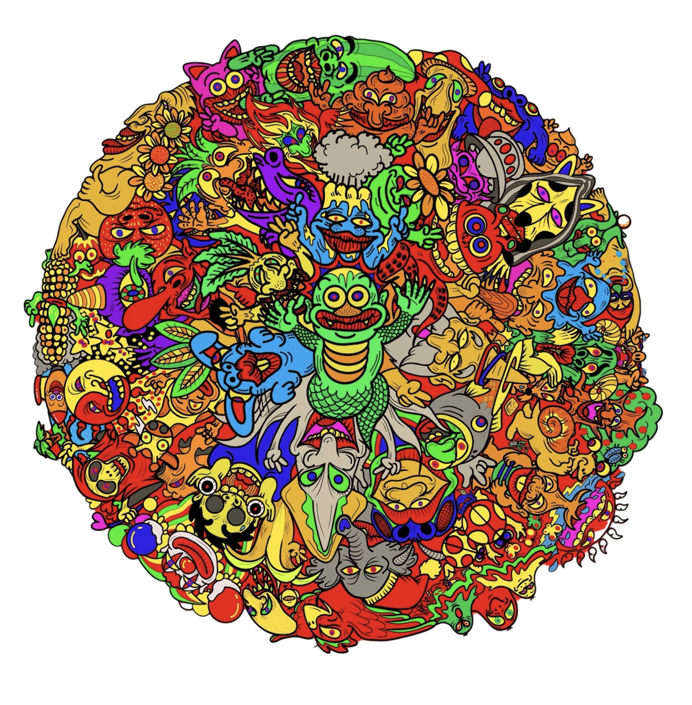
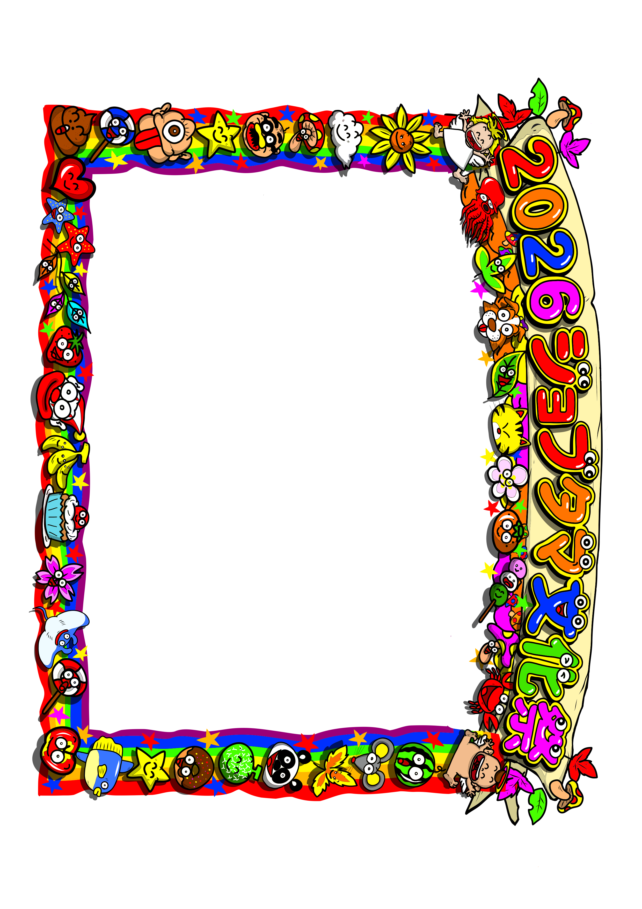

場所確認
未獲得


「読み込み開始」をタップしてカメラへのアクセスを許可します。指定のフォトスポット（マーカー）にかざしてください。

マーカーを読み込むと横長のフォトフレームが出現します。ボタンを押すと、横向きに合わせた角度で写真が保存されます。
撮影ボタンを押すと別タブ（白い画面）で写真が開きます。開いた写真を「長押し」して「"写真"に追加」または保存を選んでください。
撮影ボタンを押すと、自動的にファイル（photo_spot.jpg）が端末にダウンロードされます。
